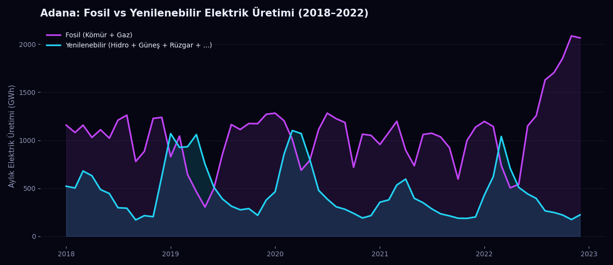

Mühendislik temelli yaklaşım
Problemi yalnızca model olarak değil, sistem ve süreç bütünü olarak ele alırım.
Adana merkezli Veri Bilimci ve Elektrik-Elektronik Mühendisi. Devreleri okuduğum gözle şimdi veriyi okuyorum — Python, makine öğrenmesi ve derin öğrenme ile gerçek dünya problemlerine çözüm üretiyorum.
Problemi yalnızca model olarak değil, sistem ve süreç bütünü olarak ele alırım.
Veri temizleme, analiz, modelleme ve sonuçların anlaşılır sunumunu birlikte yürütürüm.
Kod, varsayım ve kararları görünür tutarak takip edilebilir çalışmalar üretirim.

Yerel enerji üretim verilerini birleştirerek fosil ve yenilenebilir kaynakların zaman içindeki değişimini görünür hâle getirdim.
Çalışmayı incele →
SAT sonuçlarını anket ve sosyoekonomik verilerle birleştirerek başarıyla ilişkili örüntüleri analiz ettim.
Çalışmayı incele →
İki farklı kurumun anketlerini ortak bir yapıda temizleyip çalışan memnuniyetsizliği ve ayrılma nedenlerini karşılaştırdım.
Çalışmayı incele →Projelerde öğrendiklerimi; uygulanabilir yazılar, seçilmiş kaynaklar ve gerçek mühendislik notları olarak paylaşıyorum.
Python, veri analizi, makine öğrenmesi ve kariyer yolculuğumdan anlaşılır notlar.
Yazıları oku → seçilmiş kütüphane15 kitap + eğitimlerSeviye, konu ve kullanım amacına göre sınıflandırdığım kitaplar, kurslar ve araçlar.
Kütüphaneyi keşfet → sürecin içindenkararlar + derslerKararlar, hatalar, çözüm yolları ve projelerin perde arkasından gerçek öğrenme kayıtları.
Günlüğü takip et →Elektrik-Elektronik Mühendisliğinden veri bilimine uzanan yolculuğum ve bu geçişi nasıl kurduğum.
Devamını oku → 02Veriyi temizlemekten modele, modelden içgörüye giden süreçte kullandığım diller ve araçlar.
Şemaya bak → 03Kaggle ve GitHub'da yayınladığım veri analizi ve makine öğrenmesi çalışmalarım.
Projeleri gör → 07Bir proje mi konuşmak istiyorsun, yoksa sadece merhaba mı demek istiyorsun — buradan ulaş.
İletişime geç →